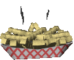
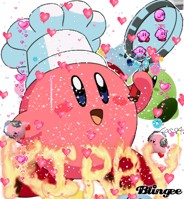
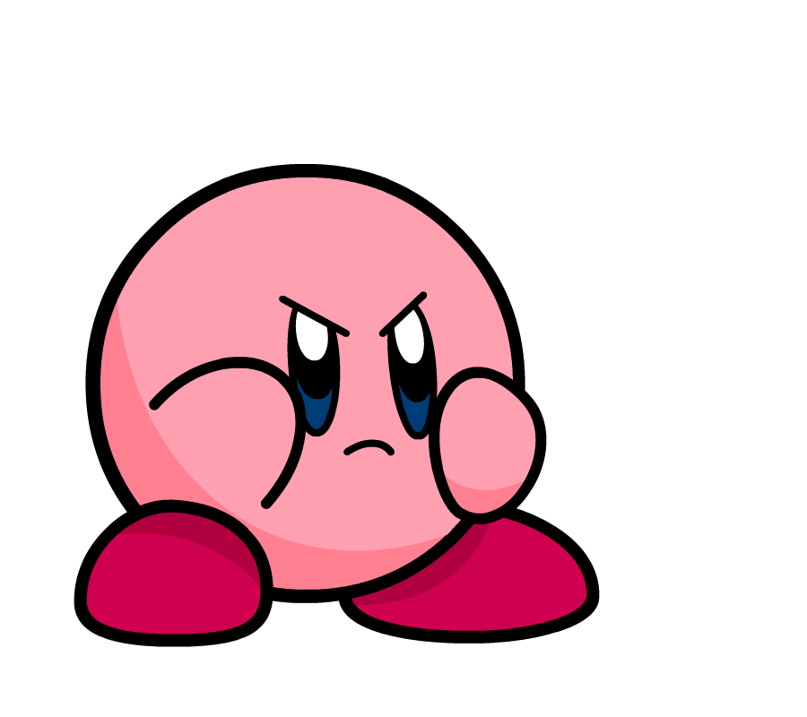

ik ben Sebastiaan en ik ben 20 jaren oud. Ik houd veel van foto's en katten natuur honden zelfs papagaaien en zwemmen en alle andere dingen op deze website.
ik woon in zandvoort.
ik zit in de laatste jaar van mbo4! store
ik heb een leuke kat die snuitje heet. Ik heb veel foto's van haar op hyves staan.
mijn favoriete eten is brocolli maar af en toe patat vind ik ook lekker.
